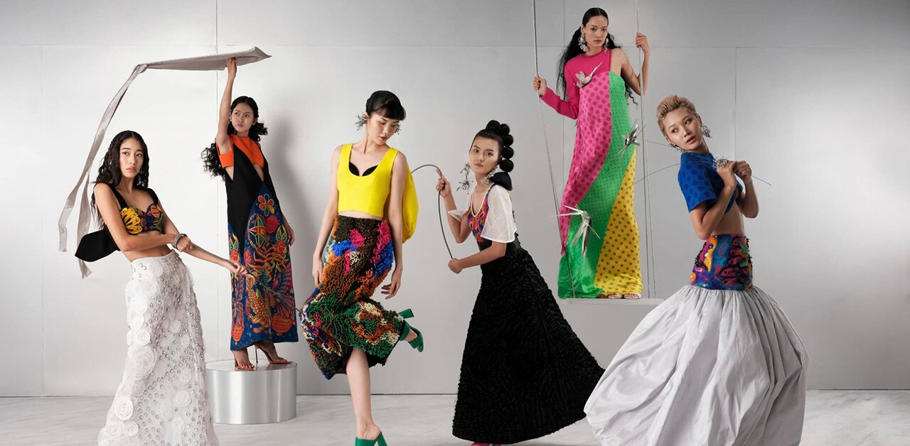

Những gam màu không thể thiếu trong dịp tết giáp thìn
Màu sắc của trang phục là một trong những yếu tố rất quan trọng. Đây không chỉ là yếu tố tạo được điểm nhấn, sự khác biệt mà còn là ngôn...

Mix áo thun oversize chuẩn phong cách với 5 tips ấn tượng
Áo phông oversize đang là một hot item dẫn đầu xu hướng thời trang giới trẻ hiện nay. Ngày càng nhiều các bạn trẻ yêu thích, ưa chuộng và....

Cách để genz thể hiện bản thân họ thông qua thời trang
Gen Z là thế hệ trẻ đầy sáng tạo và thể hiện bản thân của họ thông qua thời trang. Họ thích sử dụng những màu sắc nổi bật, phong cách độc...
Trang phục nhàu nhĩ nhăn nhúm mốt hot xuân hè 2023
Trang phục nhàu nhĩ nhăn nhúm được xem là mốt hot của mùa Xuân Hè 2023, thay vì là lượt phẳng phiu. Nhiều người không có thói quen là quần áo chắc....
Áo blazer không thể thiếu dành cho mùa thu
Cân nhắc tới combo gồm áo blazer màu be với một chiếc quần jeans hay chân váy ngắn là lựa chọn không thể thiếu của các cô gái nào thích sự trẻ trung...

Chọn trang phục gì để vừa trẻ trung vừa thanh lịch
Lựa chọn trang phục luôn khiến nhiều chị em “đau đầu” để làm thế nào cho vừa thoải mái, vừa phù hợp, vừa fashion luôn là những vấn đề nan giải...
Bài viết mới
Những gam màu không thể thiếu trong dịp tết giáp thìn
Màu sắc của trang phục là một trong những yếu tố rất quan trọng. Đây không chỉ...
28/01/2024
Mix áo thun oversize chuẩn phong cách với 5 tips ấn tượng
Áo phông oversize đang là một hot item dẫn đầu xu hướng thời trang giới trẻ hiện...
24/01/2024
Cách để genz thể hiện bản thân họ thông qua thời trang
Gen Z là thế hệ trẻ đầy sáng tạo và thể hiện bản thân của họ thông qua thời trang. Họ...
26/11/2023
1
2
3